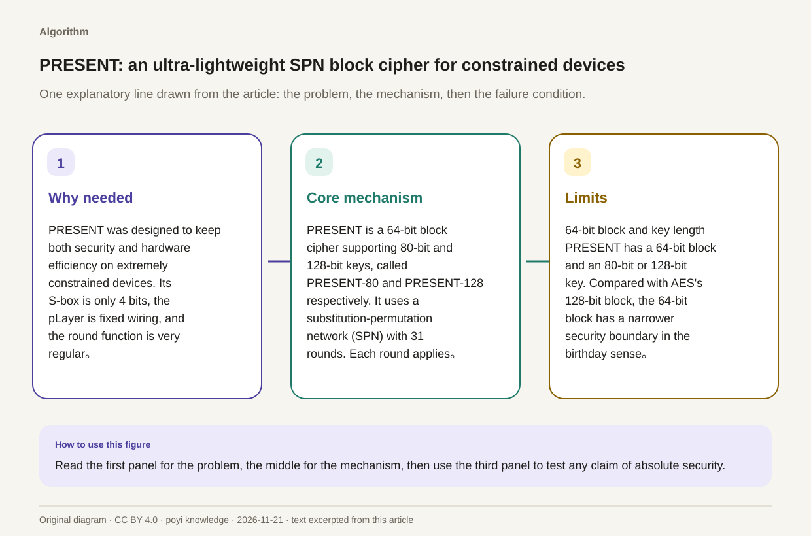
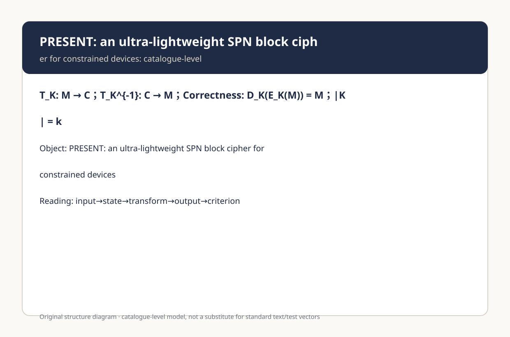

Principles
Algorithm: PRESENT (PRESENT 轻量级分组密码). PRESENT is a 64-bit block cipher supporting 80-bit and 128-bit keys, called PRESENT-80 and PRESENT-128 respectively. It uses a substitution-permutation network (SPN) with 31 rounds. Each round applies a round-key XOR, sixteen parallel 4-bit S-box substitutions and a fixed bit permutation, followed by one final round-key XOR after the last round. The round function can be written as:
state = state xor K_i
state = sBoxLayer(state)
state = pLayer(state)
(repeat 31 rounds, then xor K_32)
The S-box is a 4-bit to 4-bit permutation mapping inputs 0,1,...,F to outputs C,5,6,B,9,0,A,D,3,E,F,8,4,7,1,2. The pLayer moves bit i to position P(i), where P(i) = 16*(i mod 4) + floor(i/4); for example, bit 1 moves to bit 16 and bit 4 moves to bit 1. The permutation is wiring only and needs no logic gates, which suits hardware. PRESENT-80 stores the 80-bit key in a register K and takes the leftmost 64 bits as the round key each round. After extraction, K is rotated left by 61 bits, the leftmost four bits pass through the S-box, and the round counter i is XORed into bits 19 to 15. PRESENT-128 uses a 128-bit register, rotates left by 61 bits, applies two S-boxes to the leftmost eight bits, and XORs the round counter into bits 66 to 62. Both key schedules produce 32 round keys for the 31 rounds and the final key addition.

Why it matters
PRESENT was designed to keep both security and hardware efficiency on extremely constrained devices. Its S-box is only 4 bits, the pLayer is fixed wiring, and the round function is very regular; the original paper reports a hardware implementation of about 1570 gate equivalents, suitable for RFID tags and sensor networks where area, power and cost are tight.
It is also a clear sample for understanding SPNs: the S-box provides nonlinearity, the pLayer provides diffusion, round keys break symmetry, and 31 rounds spread local changes across the state. Compared with AES's byte S-box and MixColumns, PRESENT's 4-bit S-box and bit permutation are easier to make small in hardware, but usually less attractive in software.
PRESENT is not a replacement for AES. It fits resource-constrained, limited-data settings; for large data volumes or long-term keys, the 64-bit block and 80-bit key have a narrower security boundary, and ISO/IEC 29192-2 therefore gives a limit on encryptions under one key.
Applications
ISO/IEC 29192-2 includes PRESENT among its lightweight block ciphers, alongside CLEFIA and LEA. Its typical applications are RFID tags, wireless sensor networks and other resource-constrained devices, where gate count, power and cost matter more than throughput on a general-purpose server.
The original paper introduced PRESENT at CHES 2007 and gave four test vectors. This article uses those four vectors to verify encryption and decryption: all-zero and all-one plaintexts combined with all-zero and all-one 80-bit keys, covering the S-box, pLayer and key schedule.
PRESENT defines only the block cipher, not a mode of operation. Real use still requires a mode such as CBC, CTR or GCM, plus IV, nonce, padding or authentication handling; a block cipher alone is not a complete encryption scheme.

Limits & attacks
PRESENT has a 64-bit block and an 80-bit or 128-bit key. Compared with AES's 128-bit block, the 64-bit block has a narrower security boundary in the birthday sense; ISO/IEC 29192-2 Annex D also gives a limit on the number of encryptions under a single key. That limit is part of the standard, not an optional performance suggestion.
An 80-bit key is also shorter than the 128-bit keys common in modern general-purpose settings. PRESENT targets constrained devices, not long-term protection of high-value data; key length and block size must match the threat model.
A block cipher alone provides a pseudorandom permutation, not integrity. PRESENT cannot detect ciphertext modification; when authentication is needed, use AEAD or encrypt-then-MAC rather than relying on the round function.
PRESENT's 4-bit S-box and bit permutation are small in hardware, but implementations can still leak power, timing or electromagnetic information. Masking, constant-time comparison and fault protection are implementation concerns, not part of the algorithm definition.
This article's teaching implementation handles only PRESENT-80/128 fixed vectors, key schedules, the S-box and inverse pLayer, and a one-bit diffusion demonstration. It does not generate keys, run in constant time, implement a mode of operation, protocol, key management or side-channel defenses, and must not be used in production.
History
PRESENT was proposed by Bogdanov, Knudsen, Leander, Paar, Poschmann, Robshaw, Seurin and Vikkelsøe at CHES 2007. The paper treated security and hardware efficiency as equally important, reported an implementation of about 1570 gate equivalents, and targeted RFID tags and sensor networks.
ISO/IEC 29192-2 later included PRESENT in its lightweight block-cipher standard; the current edition is the 2019 second edition, alongside CLEFIA and LEA. This standardization path shows that lightweight cryptography is not a weakened AES but a redesign for a different set of resource constraints.
PRESENT's 31 rounds, 4-bit S-box and bit permutation also became a reference point for later lightweight SPN designs. The security of lightweight SPNs is usually assessed through differential, linear, algebraic and other reduced-round analyses; that work does not change the algorithm definition but informs round counts and key choices in deployment.
Worked example & verification
Worked example
Take one published or standard test vector, record the input, the ordered steps and the byte-exact output, then compare with an independent implementation. Where no citable numeric vector is available, the entry records only structural steps and does not invent an output.
References
- Wikipedia search entry for PRESENT 轻量级分组密码. https://zh.wikipedia.org/w/index.php?search=PRESENT%20%E8%BD%BB%E9%87%8F%E7%BA%A7%E5%88%86%E7%BB%84%E5%AF%86%E7%A0%81
- Handbook of Applied Cryptography (Menezes, van Oorschot, Vanstone). https://www.cacr.math.uwaterloo.ca/hac/